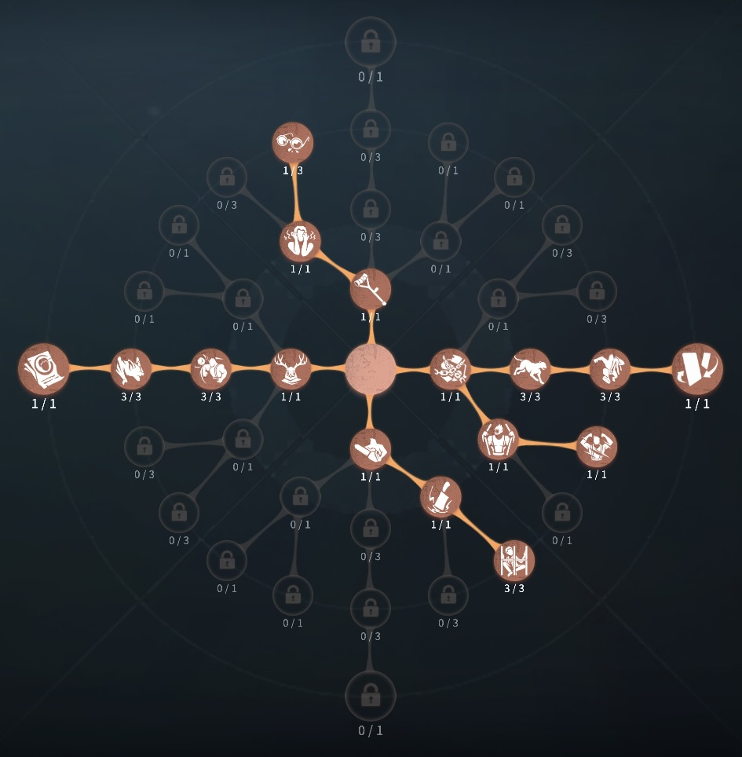
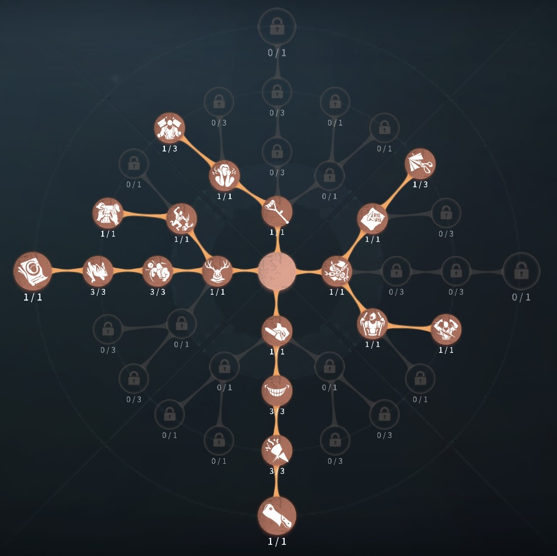

彫刻家（ガラテア）の評価
石像を使ってサバイバー破壊
外在特質とスキル
特質1:千鈞の形
・ガラテアの石像はサバイバーを強制的に押しだし障害物と挟み込むと0.5ダメージを与える。石像のダメージを受けてから1秒間は新たな石像のダメージを受けない。石像は障害物にぶつかると直線的に折り返す。4回障害物にぶつかると消滅する存在感0：俊敏の形、知恵の形
・俊敏の形：中心から前後に移動する石像が生成される
・知恵の形：
中心から左右に移動する石像が生成される
存在感1：象形墓場
・目標地点に彫刻刀を投げ、刺さった位置から一定範囲内を12秒間空中の視点からみることができる。この視点内に石像を生成することができる。また、この間本体が移動できるがその他の操作は行えない。存在感2：崇高の形
・俊敏の形と知恵の形がぶつかると合体して崇高の形となる。崇高の形は36m以内の最も近くにいるサバイバーに向かって突進する。目標や障害物に当たると砕け、一定範囲内のサバイバー全員に0.5ダメージを与えて消滅する。一定範囲にサバイバーがいない場合、合体した瞬間に砕ける。ハンターの立ち回り方
1. 初動の立ち回り
彫刻家の序盤の課題は、いかに早く存在感2になるかという点に尽きます。
移形や神出鬼没などの補助特質を活用しながらファーストダウンを狙う必要があります。
・試合開始後の流れ:
✅ 板破壊の速さや攻撃判定の広さを活かし、確実にダウンを取る
2. スキルの使い方
象形墓場と崇高の形を活用した全体圧力と、チェイス・キャンプ能力の強化が彫刻家の真骨頂です。
・彫刻の使い方:
・悪魔像: 板や窓を挟むように使い、板越え・窓越えを封じる。
・天使像:
進行方向に置いて進路を制限し、サバイバーの移動ルートを狭める。
・悪魔像を前方に出し、反射した彫像でサバイバーを引き寄せるテクニック。彫刻家は序盤が弱いため、
ここで多少解読を進められても焦らず、確実にダウンを狙うことが重要
です。
・象形墓場:
・椅子周囲や暗号機付近に設置し、
0.5ダメージを狙う。救助狩りは無理せず、
存在感を溜めることを優先。中距離でサバイバーを発見できたら、存在感稼ぎを兼ねてダメージを狙う。石像を出すだけでも解読妨害につながる。
・崇高の形:
・見晴らしの良い椅子前で救助狩りを狙う。縦横の彫刻を組み合わせて
追尾彫像を発生させ、0.5ダメージを確実に取る。暗号機に象形墓場を設置し、回復や立て直しを妨害。悪魔像→天使像の順に生成
すると、追尾彫像を作りやすい。
3. チェイス中の立ち回り
進行方向に彫刻を配置し、逃げ道を制限。
✅ 板・窓を封じる→
板を倒させる前に悪魔像を設置し、板越えを防ぐ。
✅ 追尾彫像の活用→ 空間を利用し、
サバイバーの逃げ道を完全に封じる。通路の狭い場所では即発動:
迷路のような地形では即彫刻を展開し、強制的にダメージを与える。
4. 救助狩りの立ち回り
彫刻家は
救助狩りが得意なハンターであり、石像を活用することで救助を防ぐ
・崇高の形で0.5ダメージ当てる:
→ 救助に来たサバイバーに
縦横の彫像を投げて追尾彫像を作り、0.5ダメージを稼ぐ。
・石像を椅子に流しながら、救助を遅延する:
→椅子に向かって石像をはなつことで、救助の手が止まるので、遅延を狙い恐怖の一撃もしくは0.5ダメージを狙おう。
5. 注意点
ガラテアを使う際には、以下の点に注意しましょう。
🔹 スキルの精度向上
→ 彫刻の精度が低いと時間を無駄にする
🔹 石像の出し方を覚える
→
ガラテアの石像には色々な出し方があり、覚えておくことで確実なダウンがとれる
おすすめの内在人格
傲慢裏向きカード型人格
この内在人格は、コントロールで椅子耐久を急かすことでの救助狩りや見捨てへの対応し、通電後は石像と通常でダウンさせる人格

傲慢型人格
この内在人格は、幽閉の恐怖でゲート守りを可能にし、中毒症と怒りで粘着した人格


みんなのコメント